Informs whether a team should treat open-weight models as a fallback behind frontier APIs or as a real lever for cutting cost through post-training specialization
This traces the panel's reasoning from inspectability and the Fable scare to post-training cost wins and their bold one-year predictions; the arrows are our reading of the argument, not stated by the speakers (ours).
“These models are inherently trustworthy. You know much more about what's going on when you hit and talk to these models than you ever will what's going on when you hit an arbitrary API.”
said at 08:17“as soon as uh, Anthropic had to put Fable away and people realized that, "Oh, our access to these frontier systems might not be universal anymore. Uh, there's probably going to be a lot of checks and balances.”
said at 09:19“take an open model and like specialize it to automate finance within like a week or two to get like better performance than like Opus at a fraction of the cost of Haiku.”
said at 13:28“instead of speaking about token maxing, you know, speaking more about like the outcome maxing of like”
said at 15:02“most people probably do not need frontier level intelligence for like 90% of their tasks, right?”
said at 27:02“weights uh license. Uh the idea is like, we we need a way to really make it very clear in the license that you can use the outputs to produce a model.”
said at 21:49“to be the most consequential year for uh open intelligence that uh will a-a-a-a-at least for from where I sit determine the future of uh of a summit like this, right?”
said at 38:02“I think that we will not be needing to go to an API for most of the tasks that we all do each day with AI.”
said at 38:02All four panelists have a direct commercial stake in open models succeeding, so their trust and cost claims are worth weighing against vendors with the opposite incentive before treating them as settled (ours).
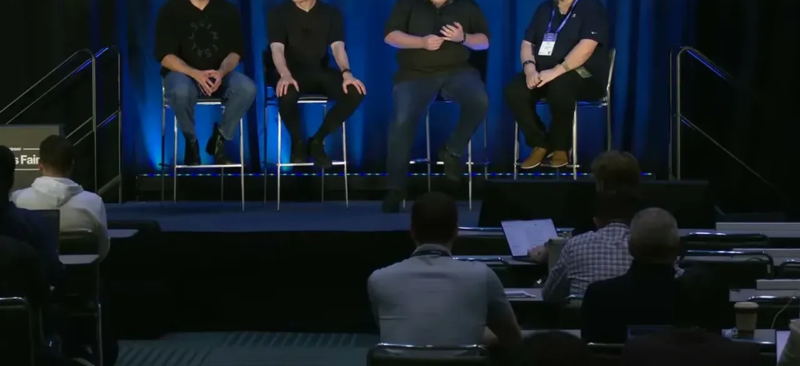
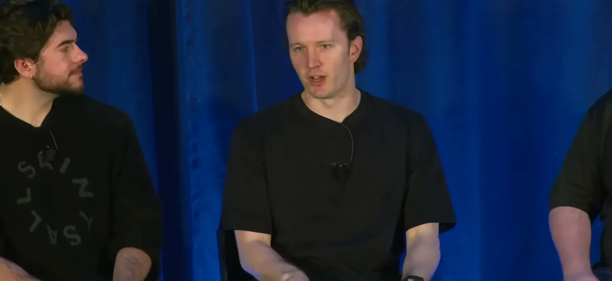
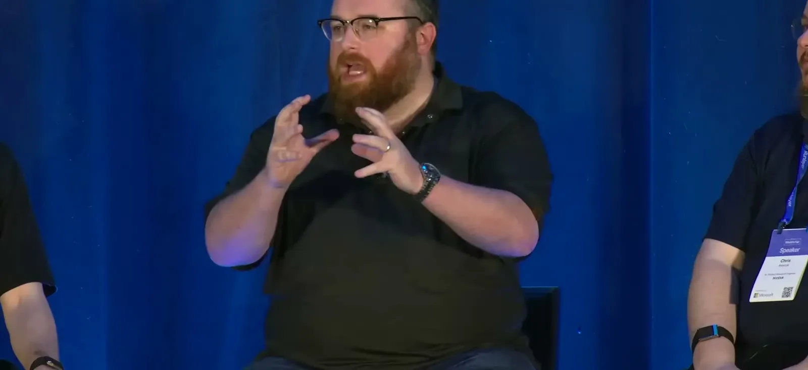
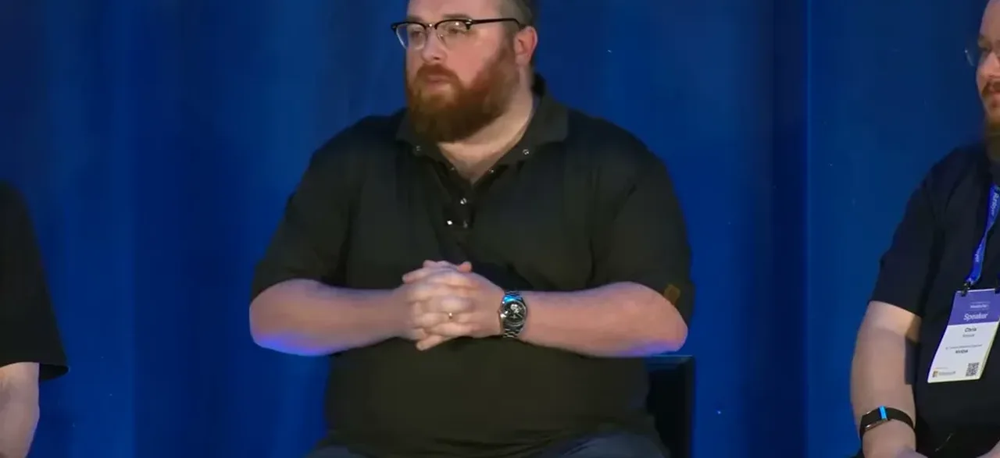
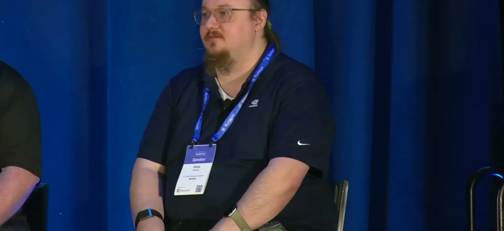
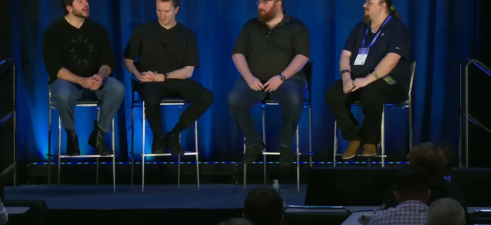
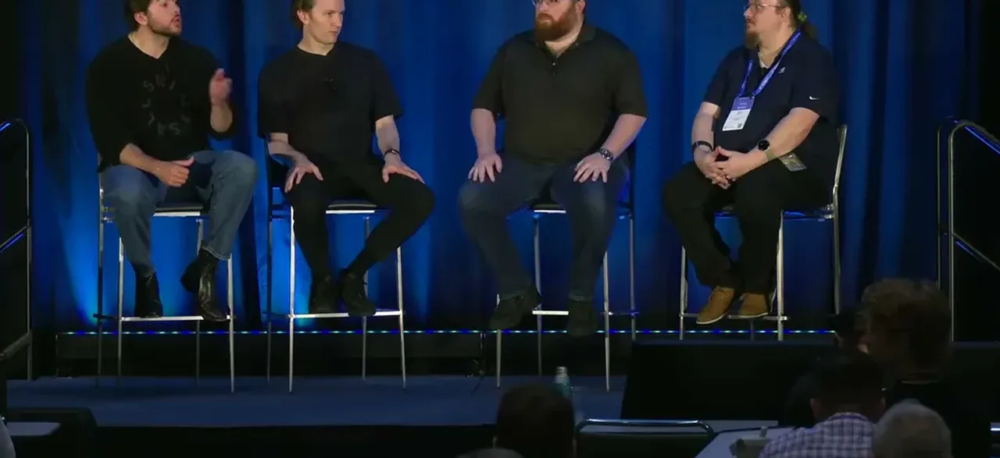
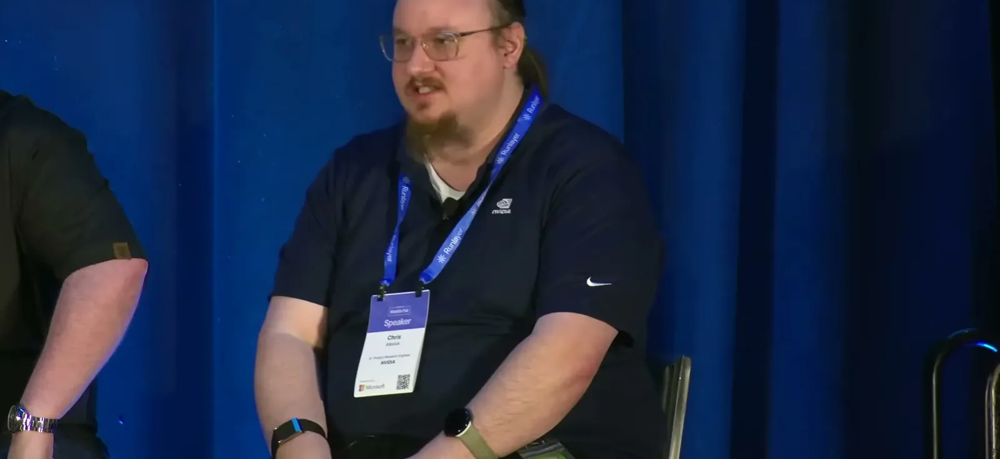
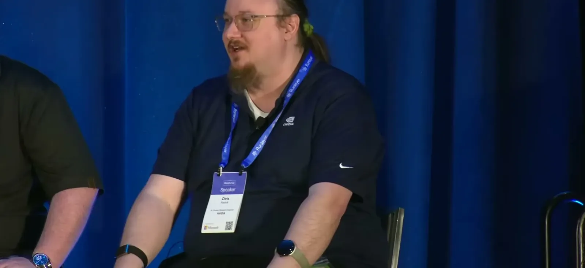
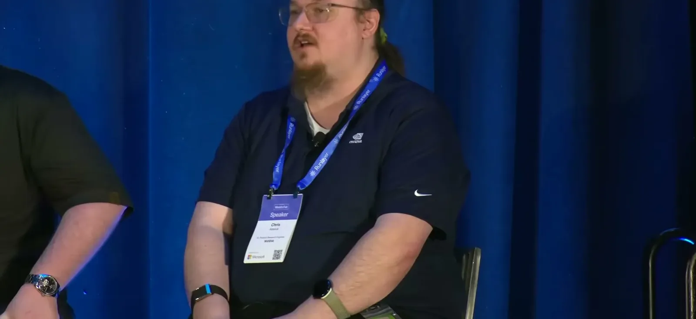
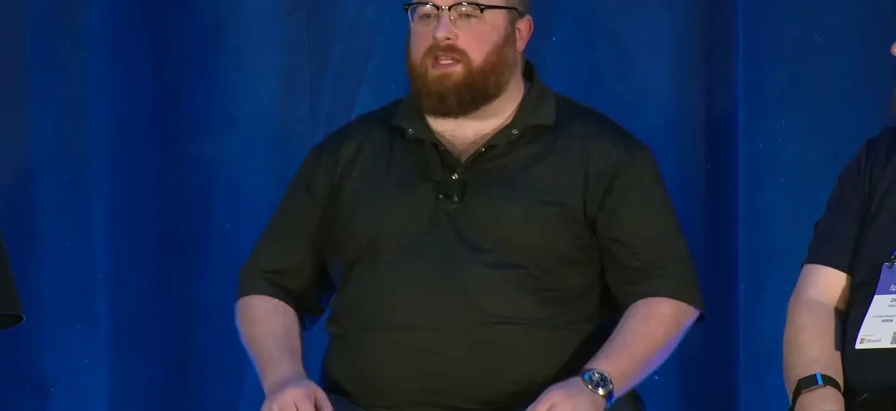
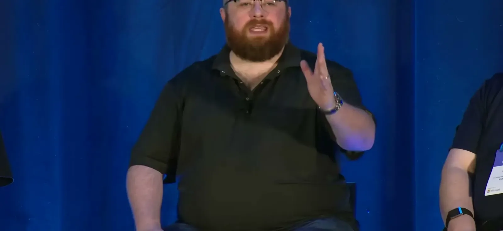
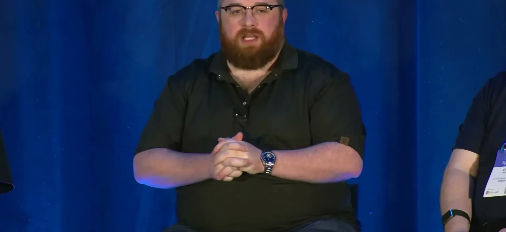
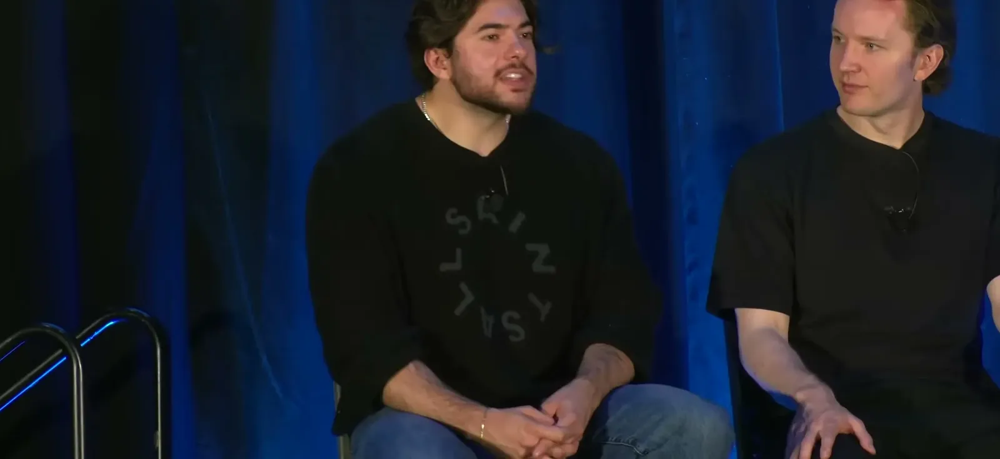
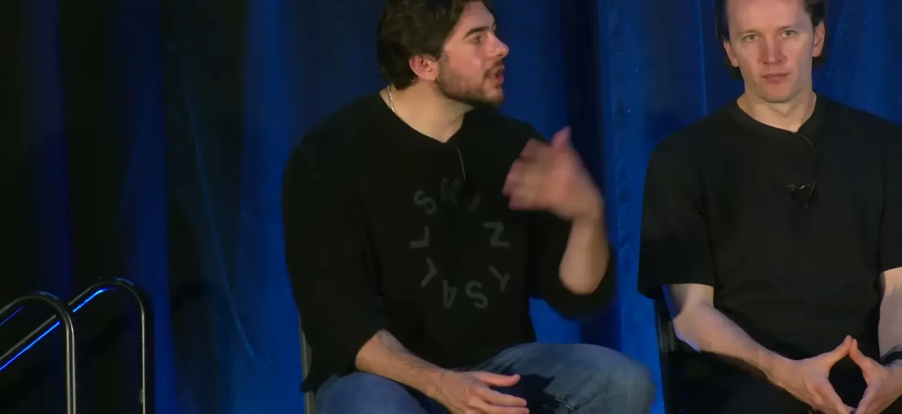
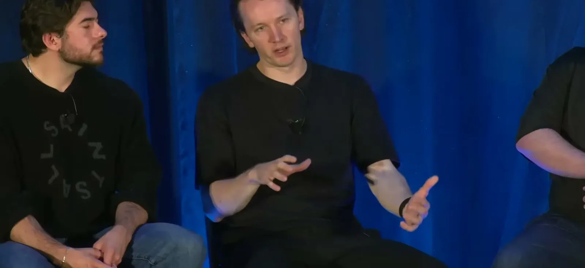
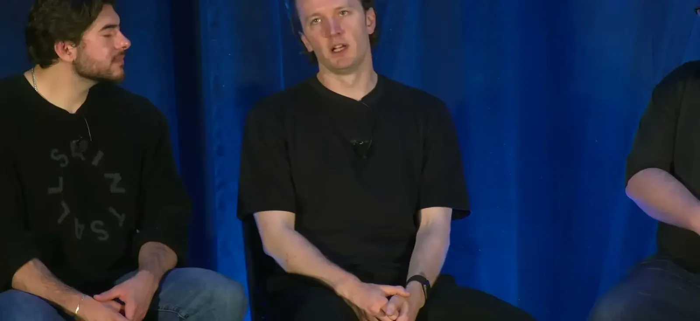
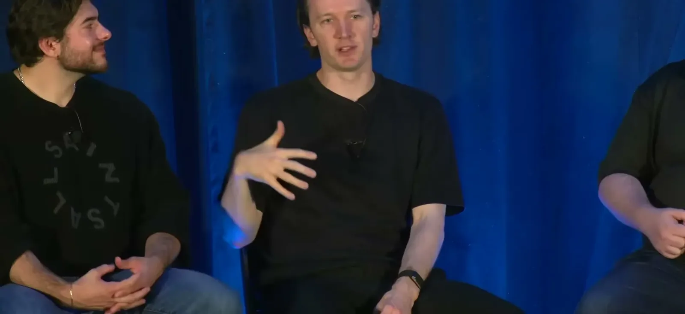
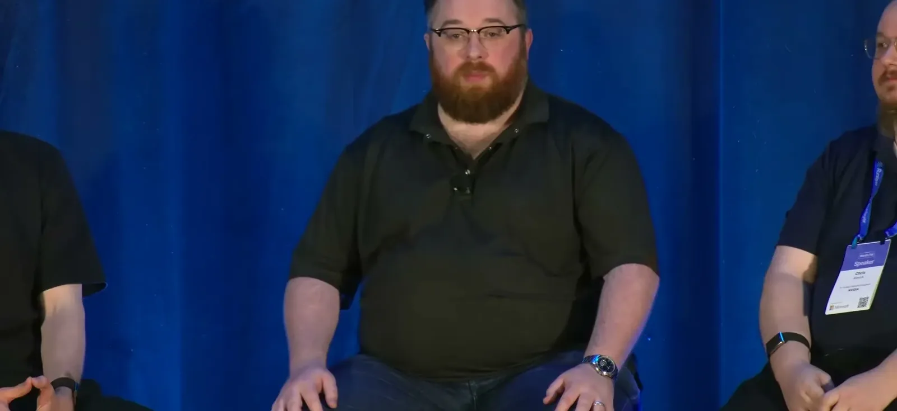
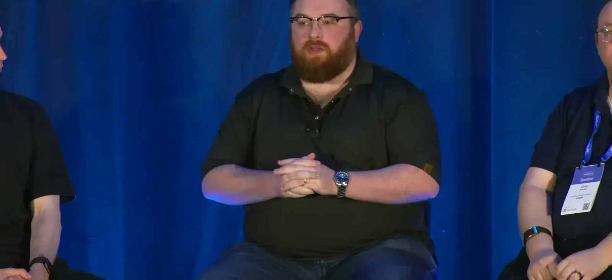
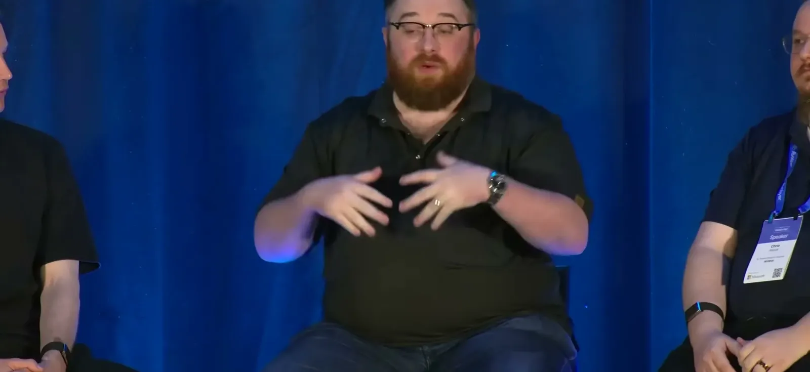
| Stance | Claim | t |
|---|---|---|
| asserts | Because open model weights, code, and often data are inspectable, panelists argue open models are inherently more trustworthy than closed APIs, whose outputs you must take on faith. | 08:17 |
| asserts | After Anthropic had to restrict Fable, enterprises worried their frontier-API access wasn't guaranteed and began moving to open and Chinese models they could count on running indefinitely. | 09:19 |
| asserts | Companies like Ramp and Saber post-trained an open model to automate finance tasks in a week or two, beating Opus's performance at a fraction of what Haiku costs. | 13:28 |
| asserts | Vincent reframes the cost conversation from 'token maxing' to 'outcome maxing' — getting more than a dollar of value out of a dollar of compute. | 15:02 |
| warns | Chris warns that most people don't actually need frontier-level intelligence for roughly 90% of their tasks, making a specialized smaller model the better fit. | 27:02 |
| asserts | Nemotron and Trinity have adopted the Open MDW (model/data/weights) license to explicitly permit using model outputs to train new models, unlike typical closed-API terms of service. | 21:49 |
| predicts | Chris Alexiuk calls the coming year the most consequential yet for determining how AI capability gets distributed. | 38:02 |
| predicts | Chris predicts that within a year, most day-to-day AI tasks won't require calling an API at all. | 38:02 |
Machine-readable copy embedded in this page (script#ontology) and in the corpus ontology.